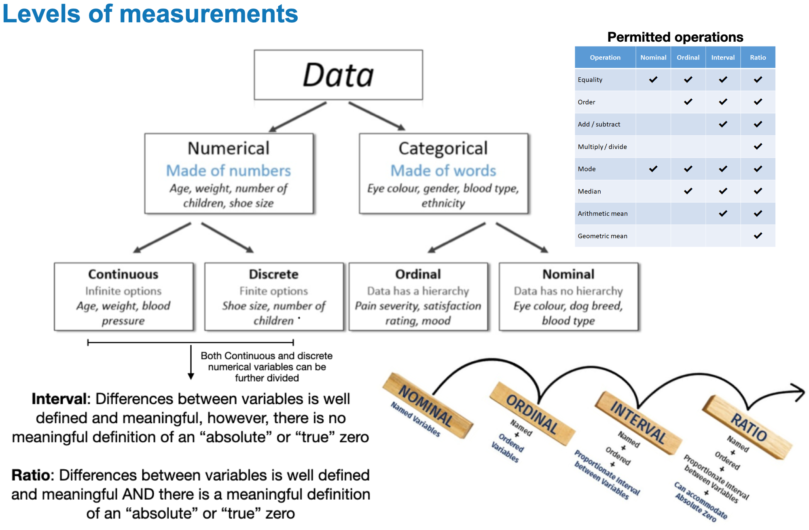
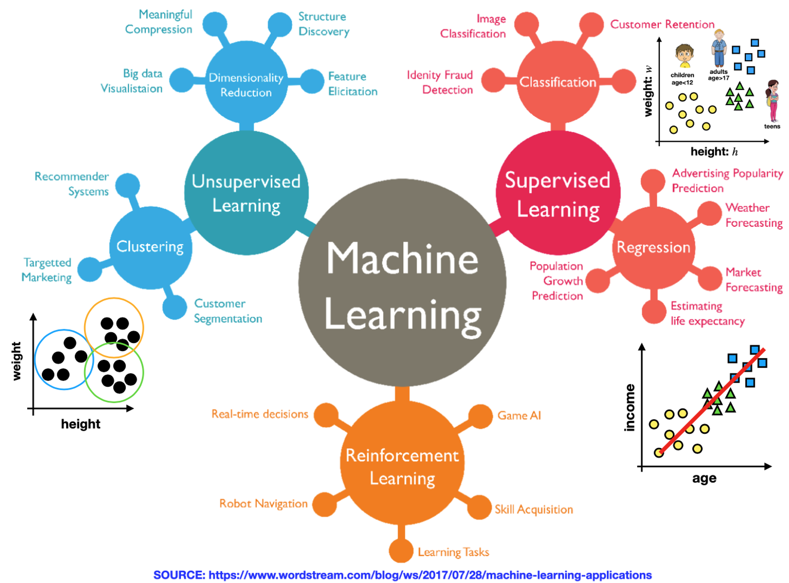

flowchart LR
A[Hard edge] --> B(Round edge)
B --> C{Decision}
C --> D[Result one]
C --> E[Result two]
A Mermaid diagram
This course focuses on common mathematical optimization paradigms, efficient algorithmic techniques, and critical Data Science applications of optimization over Euclidean spaces. Convex and non-convex paradigms are considered, and algorithmic techniques include line searches, gradient descent, Newton’s method, the log-barrier interior point method, stochastic gradient descent, and coordinate descent. Data Science techniques addressed in this course include least squares regression, principal component analysis, logistic regression, support vector machines, and deep neural networks 1 .
bibliogrphy: Morgenthaler (2009) pointed out xxx, and then Behrens and Yu (2003) said xxx.
flowchart LR
A[Hard edge] --> B(Round edge)
B --> C{Decision}
C --> D[Result one]
C --> E[Result two]
A Mermaid diagram
rogramming for coursework will be carried out in the Python (version 3.6+) and students will submit Jupyter Notebooks for their assignments. Numpy, Scipy, Scikit-Learn, Matplotlib, Pan
 
A list whose numbering continues after
an interruption
| Right | Left | Default | Center |
|---|---|---|---|
| 12 | 12 | 12 | 12 |
| 123 | 123 | 123 | 123 |
| 1 | 1 | 1 | 1 |
This is a quote
\[E = mc^{2}\]
Result
Here is the footnote.↩︎